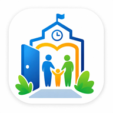

Modo offlineSem conexão
Você está sem internet agora. Na portaria, registros pendentes ficam salvos no aparelho e sincronizam quando a conexão voltar.
Porta Aberta Escolar
Modo offlineVocê está sem internet agora. Na portaria, registros pendentes ficam salvos no aparelho e sincronizam quando a conexão voltar.
Porta Aberta Escolar